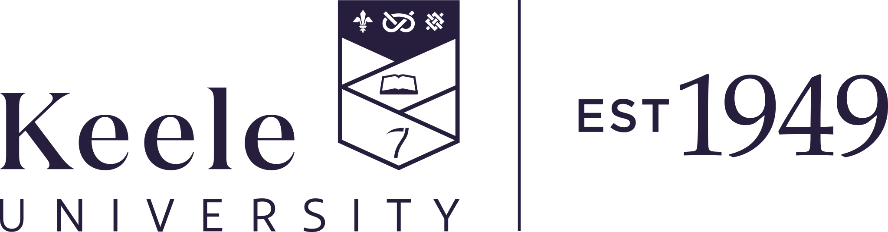

Educate for a changing world
Design learning around adaptability, belonging and lifelong relevance.

Strategy Dev SiteKeele University Strategy Dev Site
This landing page introduces the strategy in a way that is clear enough for a first visit and rich enough for deeper exploration. Stakeholders can quickly understand the vision, then drill into the full themes, evidence and implementation detail when they want more.
Design learning around adaptability, belonging and lifelong relevance.
Focus our strengths on questions that matter locally, nationally and globally.
Make partnership, place and social value visible in everything we do.
Strategic Priorities
These priorities provide the top-level narrative for broad audiences. Each card includes a concise summary and an expandable deep dive for people who want more context.
We will offer inclusive, distinctive and flexible learning experiences that prepare students to thrive across careers, communities and disciplines.
Focus areas include curriculum renewal, digital learning quality, student success, employability and a stronger sense of belonging.
We will grow research intensity where we have the greatest capacity to create knowledge, influence practice and improve lives.
Our approach combines academic excellence with clearer pathways to translation, collaboration and public value.
We will deepen our role as an anchor institution by working alongside employers, schools, cultural organisations and communities.
This priority ensures the strategy is outward-facing and legible to external stakeholders as well as internal audiences.
Enabling Pillars
Invest in leadership, wellbeing, talent and inclusion so our staff community can do its best work.
Create a simpler, smarter digital environment that improves decision making and user experience.
Make deliberate choices about investment, sustainability and value so the strategy remains credible.
Develop spaces and infrastructure that support collaboration, accessibility and environmental responsibility.
Tell a more coherent institutional story and strengthen how people experience the university brand.
Roadmap
Clarify ownership, publish initial measures, connect faculty and service plans to the institutional strategy.
Prioritise major programmes, strengthen partnership portfolios and demonstrate early impact.
Expand what works, review progress openly and refresh priorities in response to a changing context.
Full Strategy
The layout below gives readers a structured path into the longer narrative. They can jump by theme, expand context, and read the fuller strategic text without leaving the page.
Our university exists to create opportunity through education, generate knowledge with purpose and contribute to the prosperity and wellbeing of the communities we serve. This strategy sets out how we will strengthen that purpose over the next decade.
We will be values-led, evidence-informed and partnership-minded. We will act with confidence in our strengths while remaining open to change, collaboration and challenge.
Open the full strategy documentHigher education is facing greater complexity: shifts in student expectation, pressure on funding, technological change, labour market transition and rising demands for demonstrable impact. In this context, clarity of strategy is essential.
Our response is to focus more deliberately on where we can make the greatest difference, simplify how the institution communicates its direction, and connect aspiration to practical delivery.
Open the full strategy documentWe will create an educational experience that is intellectually challenging, inclusive by design and connected to the needs of a changing world. Students will benefit from strong disciplinary foundations, richer interdisciplinary opportunities and clearer pathways into employment and further learning.
This means improving curriculum agility, investing in teaching excellence, and making the student journey more coherent from recruitment through to graduation and beyond.
Open the full strategy documentOur research will be recognised for both quality and usefulness. We will support areas of established excellence, encourage collaboration across boundaries and create stronger routes from discovery to impact.
Success will come from a balanced approach: backing talented people, building enabling infrastructure and choosing partnership models that extend our influence.
Open the full strategy documentOur ambitions will be realised through relationships. We will deepen collaboration with employers, public services, cultural organisations, schools, alumni and civic partners so that our teaching, research and engagement create broader public value.
We want stakeholders to see this strategy not only as an internal plan, but as an invitation to build the future with us.
Open the full strategy documentStrategy only matters when it shapes decisions. We will support delivery through transparent governance, a small number of institutional measures, regular reporting and a clear line of sight between the university strategy and local planning.
Progress will be reviewed regularly so we can adapt with discipline, learn from evidence and stay accountable to our community and partners.
Open the full strategy document